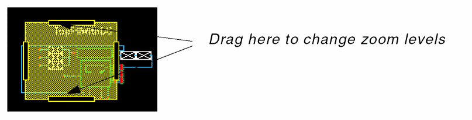

18
The World View Assistant
The World View assistant displays a panoramic view of an entire schematic, indicating which portion of it is currently visible in the editor window. This is especially useful navigation aid when working at high zoom levels.
On launch, the World View is positioned in the lower left-hand corner of the Schematics session window. It can then be undocked and re-positioned as required.
Figure 18-1 The World View assistant pane
The current design area on display in the canvas is shown as a yellow rectangle in the World View. You can resize this rectangle to amend the design display area in the canvas.
- Drag the box around to pan the display without affecting the zoom level.
-
Drag a handle on the edge of the box to show more or less of the design (that is, decrease or increase the zoom level)
Figure 18-2 World View handle being dragged to change zoom level
To add the World View assistant to your current session window either:
-
Select Windows – Assistants – World View.
or - Right-click in Schematics menu or toolbar area and select World View.
World View Context-Menu
Right-click over the World View assistant to display a number of related operations that can be performed directly from the World View context-menu.
Figure 18-3 World View Assistant Context-Menu
From here, you can refresh the current window (Redraw), Zoom In and Zoom Out of the current view, auto-fit the design to the World View assistant window (Fit All), or select the background Pattern of the design display (yellow rectangle).
Return to top